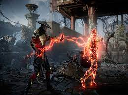
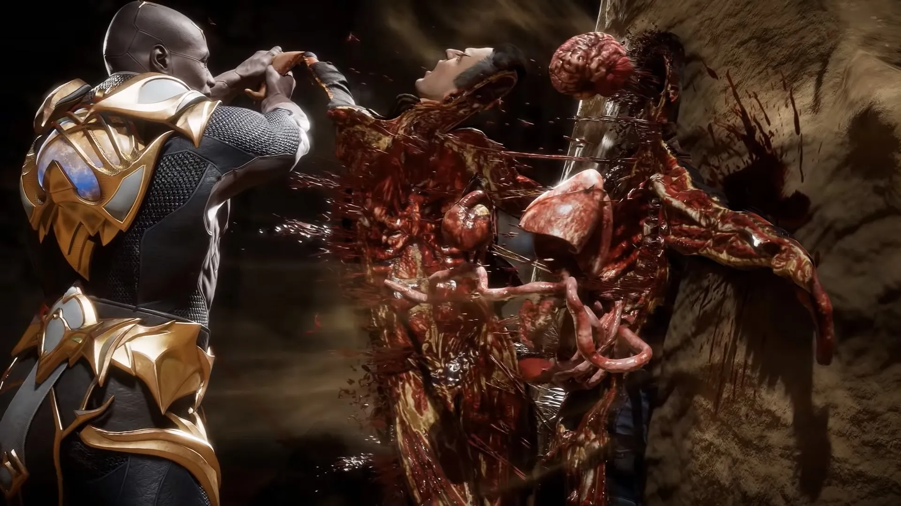

Розробники гри
NetherRealm Studios є американським розробником відеоігор в Чикаго, штат Іллінойс. Компанія була заснована в 2010 році назаміну WB Games Chicago Midway Games, котра в 2009 році придбала активи у Midway Games Chicago, після того як Midway оголосив себе банкрутом.
Saber Interactive Inc. is an American video game developer and publisher founded in 2001 with headquarters in Fort Lauderdale, Florida. Saber was acquired by Embracer Group in February 2020, making the studio a direct subsidiary.[2] The company employs over 1,350 people.[3][4]
QLOC — польская сервисная компания, работающая в индустрии компьютерных игр, и базирующаяся в Варшаве и Гданьске. Компания была основана в 2009 году как расширение отдела локализации Cenega Poland. Предоставляет услуги в области тестирования, локализации и портирования компьютерных и консольных игр.
 